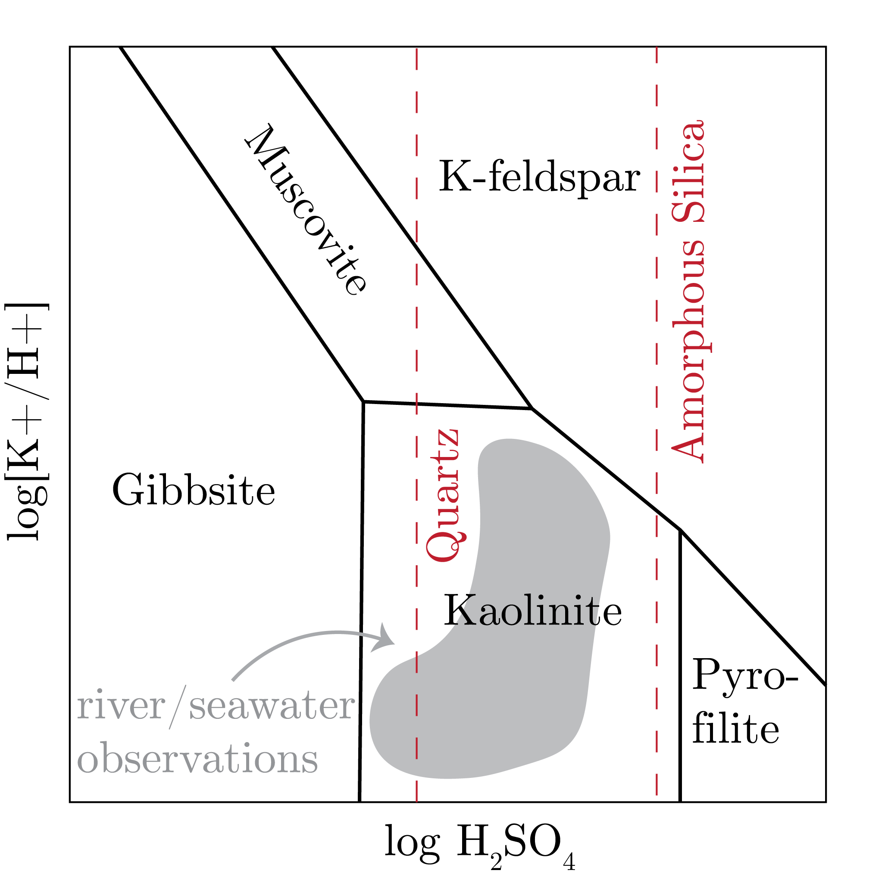
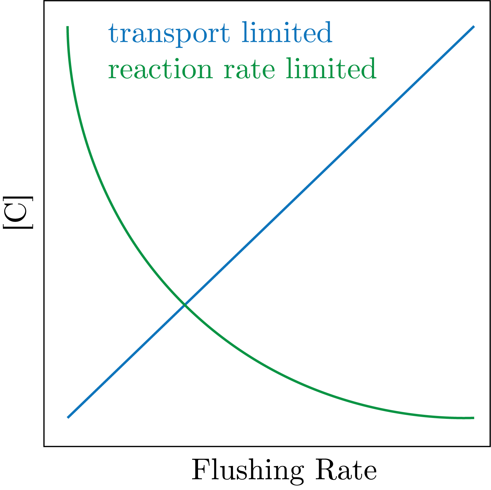
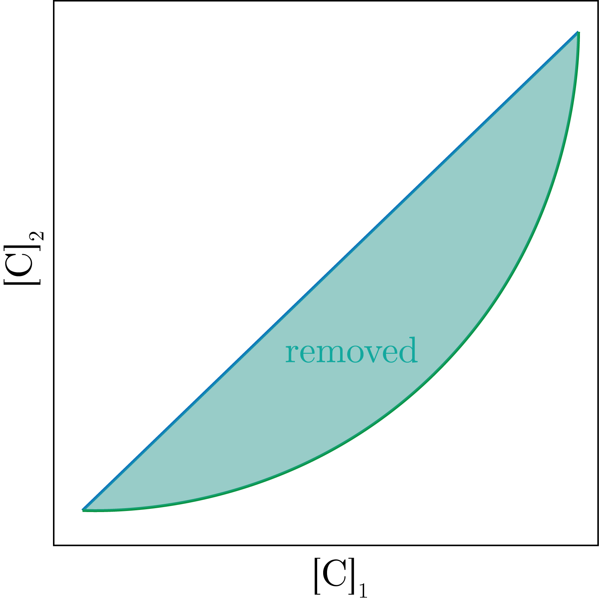

We have the following major constituents of seawater, in relative order of abundance:
Cations
Anions (no proton exchange)
Anions (proton exchange)
Na$^{+}$
Cl$^{-}$
HCO$_3^-$
Mg$^{2+}$
SO$_4^{2-}$
$\text{CO}_3^{2-}$
Ca$^{2+}$
Br$^-$
B$(\text{OH})_4^-$
K$^+$
F$^{-}$
Sr$^{2+}$
Li$^+$
We note that the summation of the cations must equal the summation of the anions, and it is the anions with the significant proton exchange, i.e., the alkalinity, that make up that difference.
Now, we are interested in what the inputs and outputs are to these important chemical constituents.
Inputs and Outputs
We have the following list:
Inputs
Ouputs
Rivers
Evaporation
Atmosphere
Sediments (biological and inorganic)
Vents
Radioactive decay
Vents
We go over these now.
Weathering Reactions
We have the general formulation of weather below:
\begin{equation}
\text{Rocks} + \text{Acid }\left( \text{H}_2\text{CO}_3^{\ast}, \text{H}_2\text{SO}_4\right) \to \text{Cations} + \text{Alkalinity }(\text{CaCO}_3) + \text{Rock Residue}
\end{equation}
One of these inputs that is important is rocks, in order of rate of weathering / stability:
Iron Oxides (residue of weathering)
Al hydroxides (residue of weathering)
Quartz
Clay minerals (residue of weathering)
Pyroxene
Feldspar
Olivine
Calcite (complete dissolution: salt)
Halite (complete dissolution: salt)
How can we convolve these endmembers?
Garrels and Mackenzie (1967) picked a number of known weathering equations and went to the Sierra Nevada's and looked at the mass balance of the dissolved minerals in the water from the mountains.
The resultant mass balance gave the overall reaction:
\begin{equation}
\begin{split}
177 \text{Plagioclase} + 7.3 \text{Biotite} &+ 13 \text{Kspar}\left( + \text{H}_2\text{O} + \text{CO}_2 \right) \\ &= 133 \text{Kaolinite} + 110 \text{Na}^- + 68 \text{Ca}^{2+} \\ &+ 22 \text{Mg}^{2+} + 20 \text{K}^+ + 270 \text{SiO}_2 + 310 \text{HCO}_3^{-}.
\end{split}
\end{equation}
Now, the first thing that comes to mind is... what is kaolinite and why was this chosen as the end member out of all of the possibilities?
To answer this, we start with quartz dissolution, given by:
\begin{equation}
\text{SiO}_2 (s) + \text{H}_2\text{O} \leftrightharpoons \text{H}_2\text{SiO}_4.
\end{equation}
The equilibrium constant is equal to:
\begin{equation}
K_{eq,1} = \frac{\{\text{H}_4\text{SiO}_4\}}{\{\text{H}_2\text{O}\}} = \{\text{H}_4\text{SiO}_4\} = K_{sp}.
\end{equation}
Now, as the product is acidic, we can get:
\begin{equation}
\text{H}_4\text{SiO}_4 \leftrightharpoons \text{H}_3\text{SiO}_4^- + \text{H}^{+},
\end{equation}
where we have that:
\begin{equation}
K_{eq,2} = \frac{\{\text{H}^{+}\}\{\text{H}_3\text{SiO}_4^-\}}{\{\text{H}_4\text{SiO}_4\}}.
\end{equation}
Now, we can substitute in our definition of $K_{sp}$ from above, take the $\log$ and solve to get:
\begin{equation}
\log\{\text{H}_3\text{SiO}_4^-\} = -\log\{\text{H}^{+}\} + \log\left[K_{sp}K_{eq,2}\right].
\end{equation}
Then, we can make a plot with respect to $pH$, which is the first term on the RHS above, and then the data, if the system is in equilibrium with quartz, would fall along the $\log-\log$ space line described by this equation.
Note that we would expect the same thing for the carbonate system, where the number of $\text{H}^{+}$ removed equalling the slope.
We can do this until all protons are gone and then sum to get the total.
If we do this and compare to amorphous silica equilibrium constants, we get opal is higher.
Therefore, we need something to make up this difference but also note that if our concentration is lower than the equilibrium line, dissolution will occur and if the concentration is higher in the ocean, then precipitation will occur.
Now, if we look at a plot of Silicate mineral in the ocean, we see that the ocean is everywhere undersaturated everywhere, with the lowest at the surface.
But we still have diatoms/radiolarians producing silica everywhere in the ocean. How is this possible?
Note that this shows how important biology is and that thermodynamics isn't everything.
We can then make phase diagrams similar to the one for quartz and silica but for multiple phases.
In so doing, we can trace out the stability relationships between mineral systems as a function acid concentration and protons.
The slopes of the lines is related to the equilibrium constants and the solubilities.
If we plot rivers and ocean, we get that the most stable (i.e., the one that is within the water) is kaolinite.
Therefore, Garrels and Mackenzie chose this is the ultimate endmember, as seen in Fig. 1.

Fig. 1: Phase diagram of rivers and seawater in silicic acid and potassium to proton space.
Discharge-Solute Relationships
One thing to note is that this is not in equilibrium, therefore there are kinetics that are playing a role.
We can start to see this in Fig. 2, in which we see different limitation regimes.

Fig. 2: Limitation regimes.
For example, we can take a transport limitation to be N and a reaction rate limitation to alkalinity (i.e., it takes time to build up).
We can look at the dissolved and sediment transport loads from land, with large discharges being from rivers like the Amazon and the Brahmaputra and South East Asia/Oceania for carbonates.
Now, Garrels and MacKenzie did pretty well, but their mass balance was missing a few things, as their took river discharge from the Sierra Nevada's which is a big granite reservoir.
For instance, where are the salts, carbonates, and sulfides?
Salts and carbonates
We often thing about salt weathering coming from evaporates, such as:
\begin{equation}
\text{NaCl} (s) \to \text{Na}^+ + \text{Cl}^-
\end{equation}
or for carbonates:
\begin{equation}
\text{CaCO}_3 (s) + \text{H}_2\text{O} + \text{CO}_2 \leftrightharpoons \text{Ca}^{2+} + 2\text{HCO}_3^{-}.
\end{equation}
Import here is that timescale matters, as we note that there is no $\text{CO}_2$ in the sodium chloride dissolution versus the calcium carbonate.
The Garrels and MacKenzie method was extended to include a larger suite of endmembers and was performed for 60 major rivers.
The result was that the biggest influence on dissolved river composition was carbonates, silicates, and atmospheric deposition.
Sulfides
We can think of this weathering reaction as:
\begin{equation}
4\text{FeS}_2 + 15\text{O}_2 + 14\text{H}_2\text{O} \to 4 \text{Fe(OH)}_2 + 8 \text{H}_2\text{SO}_4.
\end{equation}
Therefore, the oxidation of sulfides produces a lot of alkalinity, and there is a lot of S in seawater.
This then means that S is super important for the history of the Earth, as we have linked Fe to O and S.
This is all to say that weathering is highly important to the long term stability of Earth's climate.
Rivers to Seawater
If we look at the absolute and relative magnitudes of the major constituents of river and seawater, we can see that there is a drastic difference.
Reasons for this might be:
Biology
$\text{CaCO}_3$ precipitation
$\left[\text{Ca}^{2+}\right]$ is constant in the ocean
Ca:$\text{HCO}_3^{-}$ should change in a 1:1 ratio but it does not between the seawater and the oceans
Estuaries
Chemical filtering
Big salt gradients due to activity changes and ion-pairing effects
Estuaries
We note that there are a few stratification scenarios in estuaries that can change how these weathering products exchange with the ocean.
There is a salt tongue, where surface freshwater floats atop colder salt water such as in the Mississippi, or a weakly stratified in the Chesapeake.
There is also strongly stratified as in fjords or well-mixed as in Severn (in Annapolis).
The transport of this dissolved load moves as follows:
\begin{equation}
\text{Dissolved Phase (Na$^+$, $\text{HCO}_3^{-}, \text{H}_2\text{SiO}_4 \cdots$) } \to \text{ Colloidal Phase } \to \text{ Particulate Phase (quarts, $\text{CaCO}_3$, clays)}
\end{equation}
The cut off between DP and CP is 0.2 $\mu$m and between CP and PP is 0.45, which are empirically defined.
It is really going to be the colloidal phase that contributes to clays.
We can look at these clays, and see that they possess a kaolinite structure, which is known as a 1:1 clay that has balanced charge.
This means that there are alternating layers of octohedral and tetrahral structure of silicate and oxygen sheets, leading to the full balance (as equal number of layers).
There are 2:1 clays, where there are missing layers where then can be vacancies that ions can fit into the balance the charge, during which time there are chemical reactions that are facilitated.
Clay Mineral Exchange of Cations
Consider a reaction between a clay mineral, $A^+$ and $B^{2+}$.
To maintain charge balance, we get:
\begin{equation}
2\text{A-clay} + \text{B}^{2+} \leftrightharpoons \text{B-clay} + 2\text{A}^+.
\end{equation}
Assume that A and B are the only important cations in seawater so that:
\begin{equation}
\{A\} = \{B\} = 1.
\end{equation}
Now we will define a chemical exchange capacity as:
\begin{equation}
\chi_A = \text{ mole fraction of A-clay} \quad \text{ and } \quad \chi_B = \text{ mole fraction of B-clay},
\end{equation}
such that:
\begin{equation}
\chi_A + \chi_B = 1.
\end{equation}
We can define the equilibrium constant as:
\begin{equation}
K_{eq} = \frac{\{\text{B-clay}\}\{\text{A}^+\}^{2}}{\{\text{A-clay}\}^{2}\{\text{B}^{2+}\}}.
\end{equation}
Using our chemical exchange capacities, we can get:
\begin{equation}
K_{eq} \simeq \frac{\chi_B\{A\}^{2}}{\chi_A^{2}\{B\}} = 1,
\end{equation}
when then means, as the activities are the same, that:
\begin{equation}
\chi_A = 0.63 \quad \text{ and } \quad \chi_B = 0.38,
\end{equation}
which is that roughly 2 times more sites in the clay are occupied by A$^{+}$ than B$^{2+}$.
This then means that there are doubly more 2 plus charged ions in the dissolved phase.
If we dilute this by $10^3$, then we get that:
\begin{equation}
K_{eq} = 1 = \frac{\chi_B}{\chi_A} 10^{-3},
\end{equation}
which gives that:
\begin{equation}
\chi_A = 0.03 \quad \text{ and } \quad \chi_B = 0.97.
\end{equation}
Therefore, with this simple dilution, we have totally flipped the preference of the clay.
This is why seawater has a lot more Na$^+$ than Ca$^{2+}$, for these A and B, respectively in the example above.
We can extrapolate this to seawater, in which ions start to interact with the ionic medium of the solution itself.
This then means that particles will gain a charge, which ions absorb onto.
Typically there is a primary layer of the particle, onto which ions are tightly bound and then a secondary, diffusive layer called the "gluey" layer.
Then, we can get a clay colloids that are preferentially taking up 2-plus ions, as we just showed, then then interact with negatively charged particles that aggregate (and disaggregate) while sinking to the sediment.
This then means that that the river water in the estuaries are relatively enriched in Na$^{+}$ which is exported into the ocean.
We call this flocculation.
If we plot river discharge as a function of salinity, then the stratification changes will be removed and we can see a change from river (no salinity) to seawater (high salinity) and the change in different nutrients, such as Fe and Ba.
We see that the data between the two endmembers for iron is not conservative as it is not a line between two the river and seawater endmembers.
Instead the mixing line is concave up. Therefore, we get that we are preferentially removing Fe from the system through flocculation. This happens across all salinities.
The opposite would be Ba, which is concave down, and therefore shows that we are preferentially adding Ba to the system, which happens at low salinities (nearer the river input).
Processes at Work
We have:
Physical transport and mixing
Chemical reactions
We would get that (1) from above would get that for linear mixing between endmembers A and B:
\begin{equation}
F_{A} + F_{B} = 1,
\end{equation}
which means:
\begin{equation}
\left[A\right]F_A + \left[B\right]F_B = \left[A, B\right]_{mix}.
\end{equation}
We can then solve for any of these parameters given the proper number of constrained measurements.
We can then estimate the exact amount of nonlinear mixing as taking the different between the linear mixing from the above equation and the curved observed line, we can take the integrated different between the two to get the amount removed.
This is shown in Fig. 3.

Fig. 3: An diagram showing nonlinear mixing and the amount removed.
Vents
New seafloor is being produced at the Mid Atlantic Ocean Ridge, which is new and hot.
We also the East Pacific Rise.
As this sea floor moves away and deeper, it cools and ages. The age of the Atlantic is about 180 million years.
We can measure the heat flux that is coming out of the ocean floor.
The result shows that a lot less heat is being transport via diffusive transport, which happens where the floor is produced.
At this interface between the freshly floor seafloor and the water, we get a lot of interesting chemistry, which changes in $pH$, sulfate, silicate, and ions, all of which are major compositions of seawater.
Bischoff and Dickson Reacions
The first is anhydrate formation:
\begin{equation}
\text{CaSO}_4 \leftrightharpoons \text{Ca}^{2+} + \text{SO}_4^{2-}.
\end{equation}
The next is basalitic glass forming clays:
\begin{equation}
\text{Glass } \to \text{ Montmorillonite Clay},
\end{equation}
where the glass is rich in Fe(II), K$^+$, Mn(II), Al, and SiO$_4$.
We also have quartz dissolution and precipitation, as the silica concentration is at saturation:
Lastly, we have $\text{H}^{+}$ production through the production:
Reduced metal oxidation, such as Fe(II) to Fe(III) which produces protons that reduces fugacity
We can then use silica as a proxy for these processes, as we know that the ocean is globally understurated in silica.
Therefore, we can use this as an endmember and get mass balances.
We found that hydothermal vents acted as sinks for:
Mg
SO$_4$
Alk
P
With respect to rivers, we can see that hydrothermal inputs are more important for Mn and Fe whereas rivers are more important for Mg, Alk, and P.
Hydrothermal vents are able to subsist because of the constant rain of carbon from above...
Recent research has shown that both particulate and dissolved phases of Fe are important in the input of Fe to the ocean system.